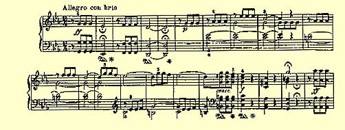
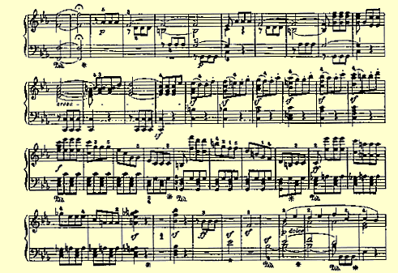
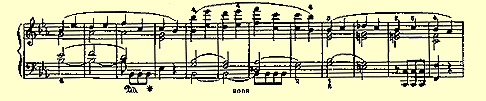
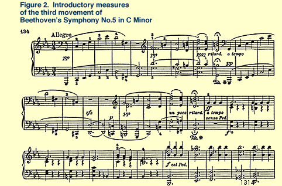

Music, Mind, and Meaning
Marvin Minsky
Computer Music Journal, Fall 1981, Vol. 5, Number 3
This is a revised version of AI Memo No. 616, MIT Artificial Intelligence Laboratory. An earlier published version appeared in Music, Mind, and Brain: The Neuropsychology of Music (Manfred Clynes, ed.) Plenum, New York, 1981
Why Do We Like Music?
Why do we like music? Our culture immerses us in it for hours each day, and everyone knows how it touches our emotions, but few think of how music touches other kinds of thought. It is astonishing how little curiosity we have about so pervasive an "environmental" influence. What might we discover if we were to study musical thinking?
Have we the tools for such work? Years ago, when science still feared meaning, the new field of research called 'Artificial Intelligence' started to supply new ideas about "representation of knowledge" that I'll use here. Are such ideas too alien for anything so subjective and irrational, aesthetic, and emotional as music? Not at all. I think the problems are the same and those distinctions wrongly drawn: only the surface of reason is rational. I don't mean that understanding emotion is easy, only that understanding reason is probably harder. Our culture has a universal myth in which we see emotion as more complex and obscure than intellect. Indeed, emotion might be "deeper" in some sense of prior evolution, but this need not make it harder to understand; in fact, I think today we actually know much more about emotion than about reason.
Certainly we know a bit about the obvious processes of reason–the ways we organize and represent ideas we get. But whence come those ideas that so conveniently fill these envelopes of order? A poverty of language shows how little this concerns us: we "get" ideas; they "come" to us; we are 're-minded of" them. I think this shows that ideas come from processes obscured from us and with which our surface thoughts are almost uninvolved. Instead, we are entranced with our emotions, which are so easily observed in others and ourselves. Perhaps the myth persists because emotions, by their nature, draw attention, while the processes of reason (much more intricate and delicate) must be private and work best alone.
The old distinctions among emotion, reason, and aesthetics are like the earth, air, and fire of an ancient alchemy. We will need much better concepts than these for a working psychic chemistry.
Much of what we now know of the mind emerged in this century from other subjects once considered just as personal and inaccessible but which were explored, for example, by Freud in his work on adults' dreams and jokes, and by Piaget in his work on children's thought and play. Why did such work have to wait for modern times? Before that, children seemed too childish and humor much too humorous for science to take them seriously.
Why do we like music? We all are reluctant, with regard to music and art, to examine our sources of pleasure or strength. In part we fear success itself– we fear that understanding might spoil enjoyment. Rightly so: art often loses power when its psychological roots are exposed. No matter; when this happens we will go on, as always, to seek more robust illusions!
I feel that music theory has gotten stuck by trying too long to find universals. Of course, we would like to study Mozart's music the way scientists analyze the spectrum of a distant star. Indeed, we find some almost universal practices in every musical era. But we must view these with suspicion, for they might show no more than what composers then felt should be universal. If so, the search for truth in art becomes a travesty in which each era's practice only parodies its predecessor's prejudice. Imagine formulating "laws" for television screenplays, taking them for natural phenomenon uninfluenced by custom or constraint of commerce.
The trouble with the search for universal laws of thought is that both memory and thinking interact and grow together. We do not just learn about things, we learn ways to think about things; then we can learn to think about thinking itself. Before long, our ways of thinking become so complicated that we cannot expect to understand their details in terms of their surface operation, but we might understand the principles that guide their growth. In much of this article I will speculate about how listening to music engages the previously acquired personal knowledge of the listener.
It has become taboo for music theorists to ask why we like what we like: our seekers have forgotten what they are searching for. To be sure, we can't account for tastes, in general, because people have various preferences. But this means only that we have to find the causes of this diversity of tastes, and this in turn means we must see that music theory is not only about music, but about how people process it. To understand any art, we must look below its surface into the psychological details of its creation and absorption.
If explaining minds seems harder than explaining songs, we should remember that sometimes enlarging problems makes them simpler! The theory of the roots of equations seemed hard for centuries within its little world of real numbers, but it suddenly seemed simple once Gauss exposed the larger world of so-called complex numbers. Similarly, music should make more sense once seen through listeners' minds.
Sonata as Teaching Machine
Music makes things in our minds, but afterward most of them fade away. What remains? In one old story about Mozart, the wonder child hears a lengthy contrapuntal mass and then writes down the entire score. I do not believe such tales, for history documents so few of them that they seem to be mere legend, though by that argument Mozart also would seem to be legend. Most people do not even remember the themes of an evening's concert. Yet, when the tunes are played again, they are recognized. Something must remain in the mind to cause this, and perhaps what we learn is not the music itself but a way of hearing it.
Compare a sonata to a teacher. The teacher gets the pupils' attention, either dramatically or by the quiet trick of speaking softly. Next, the teacher presents the elements carefully, not introducing too many new ideas or developing them too far, for until the basics are learned the pupils cannot build on them. So, at first, the teacher repeats a lot. Sonatas, too, explain first one idea, then another, and then recapitulate it all.
(Music has many forms and there are many ways to teach. I do not say that composers consciously intend to teach at all, yet they are masters at inventing forms for exposition, including those that swarm with more ideas and work our minds much harder.)
Thus 'expositions' show the basic stuff–the atoms of impending chemistries and how some simple compounds can be made from those atoms. Then, in 'developments', those now-familiar compounds, made from bits and threads of beat and tone, can clash or merge, contrast or join together. We find things that do not fit into familiar frameworks hard to understand–such things seem meaningless. I prefer to turn that around: a thing has meaning only after we have learned some ways to represent and process what it means, or to understand its parts and how they are put together.
What is the difference between merely knowing (or remembering, or memorizing) and understanding? We all agree that to understand something, we must know what it means, and that is about as far as we ever get. I think I know why that happens. A thing or idea seems meaningful only when we have several different ways to represent it–different perspectives and different associations. Then we can turn it around in our minds, so to speak: however it seems at the moment, we can see it another way and we never come to a full stop. In other words, we can 'think' about it. If there were only one way to represent this thing or idea, we would not call this representation thinking.
So something has a "meaning" only when it has a few; if we understood something just one way, we would not understand it at all. That is why the seekers of the "real" meanings never find them. This holds true especially for words like 'understand'. That is why sonatas start simply, as do the best of talks and texts. The basics are repeated several times before anything larger or more complex is presented(l. No one remembers word for word all that is said in a lecture or all notes that are played in a piece. Yet if we have understood the lecture or piece once, we now "own" new networks of knowledge about each theme and how it changes and relates to others. No one could remember all of Beethoven's Fifth Symphony from a single hearing, but neither could one ever again hear those first four notes as just four notes! Once a tiny scrap of sound, these four notes have become a known thing–a locus in the web of all the other things we know and whose meanings and significances depend on one another.

Learning to recognize is not the same as memorizing. A mind might build an agent that can sense a certain stimulus, yet build no agent that can reproduce it. How could such a mind learn that the first half-subject of Beethoven's Fifth–call it A–prefigures the second half–call it B? It is simple: an agent A that recognizes A sends a message to another agent B, built to recognize B. That message serves to "lower B's threshold" so that after A hears A, B will react to smaller hints of B than it would otherwise. As a result, that mind "expects" to hear B after A; that is, it will discern B, given fewer or more subtle cues, and might "complain" if it cannot. Yet that mind cannot reproduce either theme in any generative sense. The point is that inter-agent messages need not be in surface music languages, but can be in codes that influence certain other agents to behave in different ways.
(Andor Kovach pointed out to me that composers do not dare use this simple, four-note motive any more. So memorable was Beethoven's treatment that now an accidental hint of it can wreck another piece by unintentionally distracting the Listener.)
If sonatas are lessons, what are the subjects of those lessons? The answer is in the question! One thing the Fifth Symphony taught us is how to hear those first four notes. The surface form is just: descending major third, first tone repeated thrice. At first, that pattern can be heard two different ways:
Fifth and third in minor mode, or
Third and tonic in major mode.
But once we have heard the symphony, the latter is unthinkable–a strange constraint to plant in all our heads! Let us see how it is taught.
The Fifth declares at once its subject, then its near-identical twin. First comes the theme. Presented in a stark orchestral unison, its minor mode location in tonality is not yet made explicit, nor is its metric frame yet clear: the subject stands alone in time. Next comes its twin. The score itself leaves room to view this transposed counterpart as a complement or as a new beginning. Until now, fermatas have hidden the basic metric frame, a pair of twinned four-measure halves. So far we have only learned to hear those halves as separate wholes.
The next four-measure metric half-frame shows three versions of the subject, one on each ascending pitch of the tonic triad. (Now we arc sure the key is minor.) This shows us how the subject can be made to overlap itself, the three short notes packed perfectly inside the long tone's time-space. The second half-frame does the same, with copies of the complement ascending the dominant seventh chord. This fits the halves together in that single, most familiar, frame of harmony. In rhythm, too, the halves are so precisely congruent that there is no room to wonder how to match them–and attach them–into one eight-measure unit.

The next eight-measure frame explains some more melodic points: how to smooth the figure's firmness with passing tones and how to counterpoise the subject's own inversion inside the long note. (I think that this evokes a sort of sinusoidal motion-frame idea that is later used to represent the second subject.) It also illustrates compression of harmonic time; seen earlier, this would obscure the larger rhythmic unit, but now we know enough to place each metric frame precisely on the afterimage of the one before. Then,
Cadence. Silence. Almost. Total.
Now it is the second subject-twin's turn to stand alone in time. The conductor must select a symmetry: he or she can choose to answer prior cadence, to start anew, or to close the brackets opened at the very start. Can the conductor do all at once and maintain the metric frame? We hear a long, long unison F (Subdominant?) for, underneath that silent surface sound, we hear our minds rehearsing what was heard.
The next frame reveals the theme again, descending now by thirds. We see that it was the dominant ninth, not subdominant at all. The music fooled us that time, but never will again. Then, tour de force: the subject climbs, sounding on every scale degree. This new perspective shows us how to see the four-note theme as an appogiatura. Then, as it descends on each tonic chord-note, we are made to see it as a fragment of arpeggio. That last descent completes a set of all four possibilities, harmonic and directional. (Is this deliberate didactic thoroughness, or merely the accidental outcome of the other symmetries?) Finally, the theme's melodic range is squeezed to nothing, yet it survives and even gains strength as single tone. It has always seemed to me a mystery of art, the impact of those moments in quartets when texture turns to single line and fortepiano shames sforzando in perceived intensity. But such acts, which on the surface only cause the structure or intensity to disappear, must make the largest difference underneath. Shortly, I will propose a scheme in which a sudden, searching change awakes a lot of mental Difference-Finders. This very change wakes yet more difference-finders, and this awakening wakes still more. That is how sudden silence makes the whole mind come alive.
We are "told" all this in just one minute of the lesson and I have touched but one dimension of its rhetoric. Besides explaining, teachers beg and threaten, calm and scare; use gesture, timbre, quaver, and sometimes even silence. This is vital in music, too. Indeed, in the Fifth, it is the start of the subject! Such "lessons" must teach us as much about triads and triplets as mathematicians have learned about angles and sides! Think how much we can learn about minor second intervals from Beethoven's Grosse Fuge in E-flat, Opus 133.
What Use Is Music?
Why on earth should anyone want to learn such things? Geometry is practical–for building pyramids, for instance–but of what use is musical knowledge? Here is one idea. Each child spends endless days in curious ways; we call this play. A child stacks and packs all kinds of blocks and boxes, lines them up, and knocks them down. What is that all about? Clearly, the child is learning about space! But how on earth does one learn about time? Can one time fit inside another? Can two of them go side by side? In music, we find out! It is often said that mathematicians are unusually involved in music, but that musicians are not involved in mathematics. Perhaps both mathematicians and musicians like to make simple things more complicated, but mathematics may be too constrained to satisfy that want entirely, while music can be rigorous or free. The way the mathematics game is played, most variations lie outside the rules, while music can insist on perfect canon or tolerate a casual accompaniment. So mathematicians might need music, but musicians might not need mathematics. A simpler theory is that since music engages us at earlier ages, some mathematicians are those missing mathematical musicians.
Most adults have some childlike fascination for making and arranging larger structures out of smaller ones. One kind of musical understanding involves building large mental structures out of smaller, musical parts. Perhaps the drive to build those mental music structures is the same one that makes us try to understand the world. (Or perhaps that drive is just an accidental mutant variant of it; evolution often copies needless extra stuff, and minds so new as ours must contain a lot of that.)
Sometimes, though, we use music as a trick to misdirect our understanding of the world. When thoughts are painful we have no way to make them stop. We can attempt to turn our minds to other matters, but doing this (some claim) just submerges the bad thoughts. Perhaps the music that some call 'background' music can tranquilize by turning under-thoughts from bad to neutral, leaving the surface thoughts free of affect by diverting the unconscious. The structures we assemble in that detached kind of listening might be wholly solipsistic webs of meaninglike cross-references that nowhere touch "reality." In such a self-constructed world, we would need no truth or falsehood, good or evil, pain or joy. Music, in this unpleasant view, would serve as a fine escape from tiresome thoughts.
Syntactic Theories of Music
Contrast two answers to the question, Why do we like certain tunes?
Because they have certain structural features.
Because they resemble other tunes we like.
The first answer has to do with the laws and rules that make tunes pleasant. In language, we know some laws for sentences; that is, we know the forms sentences must have to be syntactically acceptable, if not the things they must have to make them sensible or even pleasant to the ear. As to melody, it seems that we only know some features that can help–but we know of no absolutely essential features. I do not expect much more to come of a search for a compact set of rules for musical phrases. (The point is not so much about what we mean by 'rule', as about how large is the body of knowledge involved.)
The second answer has to do with significance outside the tune itself, in the same way that asking "Which sentences are meaningful?" takes us outside shared linguistic practice and forces us to look upon each person's private tangled webs of thought. Those private webs feed upon themselves, as in all spheres involving preference: we tend to like things that remind us of the other things we like. For example, some of us like music that resembles the songs, carols, rhymes, and hymns we liked in childhood. All this begs this question: If we like new tunes that are similar to those we already like, where does our liking for music start? I will come back to this later.
The term 'resemble' begs a question too: What are the rules of musical resemblance? I am sure that this depends a lot on how melodies are "represented" in each individual mind. In each single mind, some different "mind parts" do this different ways: the same tune seems (at different times) to change its rhythm, mode, or harmony. Beyond that, individuals differ even more. Some listeners squirm to symmetries and shapes that others scarcely hear at all and some fine fugue subjects seem banal to those who sense only a single line. My guess is that our contrapuntal sensors harmonize each fading memory with others that might yet be played; perhaps Bach's mind could do this several ways at once. Even one such process might suffice to help an improviser plan what to try to play next. (To try is sufficient since improvisers, like stage magicians, know enough vamps or 'ways out' to keep the music going when bold experiments fail.
How is it possible to improvise or comprehend a complex contrapuntal piece? Simple statistical explanations cannot begin to describe such processes. Much better are the generative and transformational (e.g., neo-Schenkerian) theories of syntactic analysis, but only for the simplest analytic uses. At best, the very aim of syntax-oriented music theories is misdirected because they aspire to describe the sentences that minds produce without attempting to describe how the sentences are produced. Meaning is much more than sentence structure. We cannot expect to be able to describe the anatomy of the mind unless we understand its embryology. And so (as with most any other very complicated matter), science must start with surface systems of description. But this surface taxonomy, however elegant and comprehensive in itself, must yield in the end to a deeper, causal explanation. To understand how memory and process merge in "listening," we will have to learn to use much more "procedural" descriptions, such as programs that describe how processes proceed.
In science, we always first explain things in terms of what can be observed. {Earth, water, fire, air.] Yet things that come from complicated processes do not necessarily show their natures on the surface. [The steady pressure of a gas conceals those countless, abrupt micro-impacts.] To speak of what such things might mean or represent, we have to speak of how they are made.
We cannot describe how the mind is made without having good ways to describe complicated processes. Before computers, no languages were good for that. Piaget tried algebra and Freud tried diagrams; other psychologists used Markov Chains and matrices, but none came to much Behaviorists, quite properly, had ceased to speak at all. Linguists flocked to formal syntax, and made progress for a time but reached a limit: transformational grammar shows the contents of the registers (so to speak), but has no way to describe what controls them. This makes it hard to say how surface speech relates to underlying designation and intent–a baby-and-bath-water situation. I prefer ideas from Al research because there we tend to seek procedural description first, which seems more appropriate for mental matters.
I do not see why so many theorists find this approach disturbing. It is true that the new power derived from this approach has a price: we can say more, with computational description, but prove less. Yet less is lost than many think, for mathematics never could prove much about such complicated things. Theorems often tell us complex truths about the simple things, but only rarely tell us simple truths about the complex ones. To believe otherwise is wishful thinking or "mathematics envy." Many musical problems that resist formal solutions may turn out to be tractable anyway, in future simulations that grow artificial musical semantic networks, perhaps by "raising" simulated infants in traditional musical cultures. It will be exciting when one of these infants first shows a hint of real "talent."
Space and Tune
When we enter a room, we seem to see it all at once; we are not permitted this illusion when listening to a symphony. "Of course," one might declare, for hearing has to thread a serial path through time, while sight embraces a space all at once. Actually, it takes time to see new scenes, though we are not usually aware of this. That totally compelling sense that we are conscious of seeing everything in the room instantly and immediately is certainly the strangest of our "optical" illusions.
Music, too, immerses us in seemingly stable worlds! How can this be, when there is so little of it present at each moment? I will try to explain this by (1) arguing that hearing music is like viewing scenery and (2) by asserting that when we hear good music our minds react in very much the same way they do when we see things.' And make no mistake: I meant to say "good" music! This little theory is not meant to work for any senseless bag of musical tricks, but only for those certain kinds of music that, in their cultural times and places, command attention and approval.
(Edward Fredkin suggested to me the theory that listening to music might exercise some innate map-making mechanism in the brain. When I mentioned the puzzle of music's repetitiousness, he compared it to the way rodents explore new places: first they go one way a little, then back to home. They do it again a few times, then go a little farther. They try small digressions, but frequently return to base. Both people and mice explore new territories that way, making mental maps lest they get lost. Music might portray this building process, or even exercise those very parts of the mind.)
To see the problem in a slightly different way, consider cinema. Contrast a novice's clumsy patched and pasted reels of film with those that transport us to other worlds so artfully composed that our own worlds seem shoddy and malformed. What "hides the seams" to make great films so much less than the sum of their parts–so that we do not see them as mere sequences of scenes? What makes us feel that we are there and part of it when we are in fact immobile in our chairs, helpless to deflect an atom of the projected pattern's predetermined destiny? I will follow this idea a little further, then try to explain why good music is both more and less than sequences of notes.
Our eyes are always flashing sudden flicks of different pictures to our brains, yet none of that saccadic action leads to any sense of change or motion in the world; each thing reposes calmly in its "place"! What makes those objects stay so still while images jump and jerk so? What makes us such innate Copernicans? I will first propose how this illusion works in vision, then in music.
We will find the answer deep within the way the mind regards itself. When speaking of illusion, we assume that someone is being fooled. "I know those lines are straight," I say, "but they look bent to me." Who are those different I's and me's? We are all convinced that somewhere in each person struts a single, central self: atomic and indivisible. (And secretly we hope that it is also indestructible.)
I believe, instead, that inside each mind work many different agents. (The idea of societies of agents [Minsky 1977; 1980a; 1980b] originated in my work with Seymour Papert.) All we really need to know about agents is this: each agent knows what happens to some others, but little of what happens to the rest. It means little to say, "Eloise was unaware of X" unless we say more about which of her mind-agents were uninvolved with X. Thinking consists of making mind-agents work together; the very core of fruitful thought is breaking problems into different kinds of parts and then assigning the parts to the agents that handle them best. {Among our most important agents are those that manage these assignments, for they are the agents that embody what each person knows about what he or she knows. Without these agents we would be helpless, for we would not know what our knowing is for.)
In that division of labor we call 'seeing', I will suppose that a certain mind-agent called Feature-Finder sends messages (about features it finds on the retina) to another agent, Scene-Analyzer. Scene-Analyzer draws conclusions from the messages it gets and sends its own, in turn, to other mind-parts. For instance, Feature-Finder finds and tells about some scraps of edge and texture; then scene analyzer finds and tells that these might fit some bit of shape.
Perhaps those features come from glimpses of a certain real table leg. But knowing such a thing is not for agents at this level; scene-analyzer does not know of any such specific things. All it can do is broadcast something about shape to hosts of other agents who specialize in recognizing special things. Since special things–like tables, words, or dogs– must be involved with memory and learning, there is at least one such agent for every kind of thing this mind has learned to recognize. Thus, we can hope, this message reaches Table-Maker, an agent specialized to recognize evidence that a table is in the field of view. After many such stages, descendants of such messages finally reach Space-Builder, an agent that tries to tell of real things in real space.
Now we can see one reason why perception seems so effortless: while messages from Scene-Analyzer to Table-Maker are based on evidence that Feature-Finder supplied, the messages themselves need not say what feature-finder itself did, or how it did it. Partly this is because it would take scene-analyzer too long to explain all that. In any case, the recipients could make no use of all that information since they are not engineers or psychologists, but just little specialized nerve nets.
Only in the past few centuries have painters learned enough technique and trickery to simulate reality. (Once so informed, they often now choose different goals. Thus Space-Builder, like an ordinary person, knows nothing of how vision works, or about perspective, foveae, or blind spots. We only learn such things in school: millennia of introspection never led to their suspicion, nor did meditation, transcendental or mundane. The mind holds tightly to its secrets not from stinginess or shame, but simply because it does not know them.
Messages, in this scheme, go various ways. Each motion of the eye or head or body makes Feature-Finder start anew, and such motions are responses by muscle-moving agents to messages that Scene-Analyzer sends when it needs more details to resolve ambiguities. Scene-Analyzer itself responds to messages from "higher up." For instance, Space-Builder may have asked, "Is that a table?" of Table-Maker, which replies to itself, "Perhaps, but it should have another leg–there," so it asks scene-analyzer to verify this, and Scene-Analyzer gets the job done by making Eye-Mover look down and to the left. Nor is Scene-Understander autonomous: its questions to Scene-Analyzer are responses to requests from others. There need be no first cause in such a network.
When we look up, we are never afraid that the ground has disappeared—no matter that it has "dis-appeared." This is because Space-Builder remembers all the answers to its questions and never CHANGES any of those answers without reason; moving our eyes or raising our heads provide no cause to exorcise that floor inside our current spatial model of the room. My paper on frame-systems [Minsky 1974] says more about these concepts. Here we need only these few details.
Now, back to our illusions. While Feature-Finder is not instantaneous, it is very, very fast and a highly parallel pattern matcher. Whatever Scene-Analyzer asks, Feature-Finder answers in an eye flick, a mere tenth of a second (or less if we have image buffers). More speed comes from the way in which Space-Builder can often tell itself, via its own high-speed model memory, about what has been seen before. I argue that all this speed is another root of our illusion:
If answers seem to come as soon as questions are asked, they will seem to have been there all along.
The illusion is enhanced in yet another way by '"expectation" or "default." Those agents know good ways to lie and bluff! Aroused by only partial evidence that a table is in view, Table-Maker supplies Space-Builder with fictitious details about some "typical table'" while its servants find out more about the real one! Once so informed, Space-Builder can quickly move and plan ahead, taking some risks but ready to make corrections later. This only works, of course, when prototypes are good, and are rightly activated–that is what intelligence is all about.
As for "awareness" of how all such things are done, there simply is not room for that. Space-Builder is too remote and different to understand how feature-finder does its work of eye fixation. Each part of the mind is unaware of almost all that happens in the others. (That is why we need psychologists; we think we know what happens in our minds because those agents are so facile with "defaults" – but really, we are almost always wrong about such things.) True, each agent needs to know which of its servants can do what, but as to how, that information has no place or use inside those tiny minds inside our minds.
How do both music and vision build things in our minds? Eye motions show us real objects; phrases show us musical objects. We "learn" a room with bodily motions; large musical sections show us musical "places." Walks and climbs move us from room to room; so do transitions between musical sections. Looking back in vision is like recapitulation in music; both give us time, at certain points, to reconfirm or change our conceptions of the whole.
Hearing a theme is like seeing a thing in a room, a section or movement is like a room, and a whole sonata is like an entire building. I do not mean to say that music builds the sorts of things that space-builder does. (That is too naive a comparison of sound and place.) I do mean to say that composers stimulate coherency by engaging the same sorts of inter-agent coordinations that vision uses to produce its illusion of a stable world using, of course, different agents. I think the same is true of talk or writing, the way these very paragraphs make sense– or sense of sense–if any.
Composing and Conducting
In seeing, we can move our eyes; lookers can choose where they shall look, and when. In music we must listen *here*; that is, to the part that's being played now. It is simply no use asking Music-Finder to look *there* because it's not then, now.
If composer and conductor choose what part we hear, does not this ruin our analogy? When Music-Analyzer asks its questions, how can Music-Finder answer them unless, miraculously, the music happens to be playing what music-finder wants at just that very instant? If so, then how can music paint its scenes unless composers know exactly what the listeners will ask at every moment? How to ensure–when Music-Analyzer wants it now–that precisely that "something" will be playing now?
That is the secret of music—of writing, playing, and conducting it! Music need not, of course, confirm each listener's every expectation; each plot demands some novelty. Whatever the intent, control is required or novelty will turn to nonsense. If allowed to think too much themselves, the listeners will find unanswered questions in any score—about accidents of form and figure, voice and line, temperament and difference-tone.
Composers can have different goals: to calm and soothe, surprise and shock, tell tales, stage scenes, teach new things, or tear down prior arts. For some such purposes composers must use the known forms and frames or else expect misunderstanding. Of course, when expectations are confirmed too often the style may seem dull; this is our concern in the next section. Yet, just as in language, one often best explains a new idea by using older ones, avoiding jargon or too much lexical innovation. If readers cannot understand the words themselves, the sentences may "be Greek to them."
This is not a matter of a simple hierarchy, in which each meaning stands on lower-level ones, for example, word, phrase, sentence, paragraph, and chapter. Things never really work that way, and jabberwocky shows how sense comes through though many words are new. In every era some contemporary music changes basic elements yet exploits established larger forms, but innovations that violate too drastically the expectations of the culture cannot meet certain kinds of goals. Of course this will not apply to works whose goals include confusion and revolt, or when composers try to create things that hide or expurgate their own intentionality, but in these instances it may be hard to hold the audience.
Each musical artist must forecast and pre-direct the listener's fixations to draw attention here and distract it from there–to force the hearer (again, like a magician does) to ask only the questions that the composition is about to answer. Only by establishing such pre-established harmony can music make it seem that something is there.
Rhythm and Redundancy
A popular song has 100 measures, 1000 beats. What must the Martians imagine we mean by those measures and beats, measures and beats! The words themselves reveal an awesome repetitiousness. Why isn't music boring?
Is hearing so like seeing that we need a hundred glances to build each musical image? Some repetitive musical textures might serve to remind us of things that persist through time like wind and stream. But many sounds occur only once: we must hear a pin drop now or seek and search for it; this is one reason why we have no ear-lids. Poetry drops pins, it says each thing just once or not at all. So does some music.
Then why do we tolerate music's relentless rhythmic pulse or other repetitive architectural features? There is no one answer, for we hear in different ways, on different scales. Some of those ways portray the spans of time directly, but others speak of musical 'things', in worlds where time folds over on itself. And there, I think, is where we use those beats and measures. Music's metric frames are transient templates used for momentary matching. Its rhythms are "synchronization pulses" used to match new phrases against old, the better to contrast them with differences and change. As differences and change are sensed, the rhythmic frames fade from our awareness. Their work is done and the messages of higher-level agents never speak of them; that is why metric music is not boring!
Good music germinates from tiny seeds. How cautiously we handle novelty, sandwiching the new between repeated sections of familiar stuff! The clearest kind of change is near-identity, in thought just as in vision. Slight shifts in view may best reveal an object's form or even show us whether it is there at all.
When we discussed sonatas, we saw how matching different metric frames helps us to sense the musical ingredients. Once frames are matched, we can see how altering a single note at one point will change a major third melodic skip at another point to smooth passing tones; or will make what was *there* a seventh chord into, *here*, a dominant ninth with missing root. Matching lets our minds see different things, from different times, together. This fusion of those matching lines of tone from different measures – like television's separate lines and frames –lets us make those magic musical pictures in our minds.
How do our musical agents do this kind of work for us? We must have organized them into structures that are good at finding differences between frames. Here is a simplified four-level scheme that might work. Many such ideas are current in research on vision (Winston 1975).
Feature-Finders listen for simple time-events such as notes or peaks or pulses.
Measure-Takers notice certain patterns of time-events like 3/4, 4/4, 6/8.
Difference-Finders notice that figure X is like figure Y, but higher by a fifth.
Structure-Builders notice that three phrases form an a regular "sequence."
The idea of interconnecting Feature-Finders, Difference-Finders, and Structure-Builders is well-exemplified in Winston's work [1975]. Measure-Takers would be kinds of 'frames', as described in [Minsky 1974]. First, the Feature-Finders search the sound stream for the simplest sorts of musical significance: entrances and envelopes, the tones themselves, the other little, local things. Then Measure-Takers look for metric patterns in those small events and put them into groups, thus finding beats and postulating rhythmic regularities. Then the Difference-Finders can begin to sense events of musical importance—imitations and inversions, syncopations and suspensions. Once these are found, the Structure-Builders can start work on a larger scale.
The entire four-level agency is just one layer of a larger system in which analogous structures are repeated on larger scales. At each scale, another level of order (with its own sorts of things and differences) makes larger-scale descriptions, and thus consumes another order of structural form. As a result, notes become figures, figures turn into phrases, and phrases turn into sequences; and notes become chords, and chords make up progressions, and so on and on. Relations at each level turn to things at the next level above and are thus more easily remembered and compared. This "time-warps" things together, changing tone into tonality, note into composition.
The more regular the rhythm, the easier the matching goes—and the fewer difference agents are excited further on. Thus once it is used for "lining up," the metric structure fades from our attention because it is represented as fixed and constant like the floor of the room you are in, until some metric alteration makes the measure-takers change their minds. Sic semper all Alberti basses, um-pah-pahs, and ostinati: they all become imperceptible except when changing. Rhythm has many other functions, to be sure, and agents for those other functions see things different ways. Agents used for dancing do attend to rhythm, while other forms of music demand less steady pulses.
We all experience a phenomenon we might call 'persistence of rhythm', in which our minds maintain the beat through episodes of ambiguity. I presume that this emerges from a basic feature of how agents are usually assembled; at every level, many agents of each kind compete [Minsky 1980b]. Thus agents for 3/4, 4/4, and 6/8 compete to find best fits. Once in power, however, each agent "cross-inhibits" its competitors. Once 3/4 takes charge of things, 6/8 will find it hard to "get a hearing" even if the evidence on its side becomes slightly better.
When none of the agents has any solid evidence long enough, agents change at random or take turns. Thus anything gets interesting, in a way, if it is monotonous enough! We all know how, when a word or phrase is repeated often enough it, it appears to change—as restless searchers start to amplify minutiae and interpret noise as structure. This happens at all levels because when things are regular at one level, the difference agents at the next will fail, to be replaced by other, fresh ones that then re-present the sameness different ways. (Thus meditation, undirected from the higher mental realms, fares well with the most banal of repetitious inputs from below.)
Regularities are hidden while expressive nuances are sensed and emphasized and passed along. Rubato or crescendo, ornament or passing tone, the alterations at each level become the objects for the next. The mystery is solved; the brain is so good at sensing differences that it forgets the things themselves; that is, whenever they are the same. As for liking music, that depends on what remains.
Sentic Significance
Why do we like any tunes in the first place? Do we simply associate some tunes with pleasant experiences? Should we look back to the tones and patterns of mother's voice or heartbeat? Or could it be that some themes are innately likable? All these theories could hold truth, and others too, for nothing need have a single cause inside the mind.
Theories about children need not apply to adults because (I suspect) human minds do so much self-revising that things can get detached from their origins. We might end up liking both The Art of Fugue and The Musical Offering, mainly because each work's subject illuminates the other, which gives each work a richer network of "significance." Dependent circularity need be no paradox here, for in thinking (unlike logic) two things can support each other in midair. To be sure, such autonomy is precarious; once detached from origins, might one not drift strangely awry? Indeed so, and many people seem quite mad to one another.
In his book Sentics [l978], the pianist-physiologist Manfred Clynes describes certain specific temporal sensory patterns and claims that each is associated with a certain common emotional state. For example, in his experiments, two particular patterns that gently rise and fall are said to suggest states of love and reverence; two others (more abrupt) signify anger and hate. He claims that these and other patterns–he calls them 'sentic'–arouse the same effects through different senses–that is, embodied as acoustical intensity, or pitch, or tactile pressure, or even visual motion–and that this is cross-cultural. The time lengths of these sentic shapes, on the order of 1 sec, could correspond to parts of musical phrases.
Clynes studied the "muscular" details of instrumental performances with this in view, and concluded that music can engage emotions through these sentic signals. Of course, more experiments are needed to verify that such signals really have the reported effects. Nevertheless, I would expect to find something of the sort for quite a different reason: namely, to serve in the early social development of children. Sentic signals (if they exist) would be quite useful in helping infants to learn about themselves and others.
All learning theories require brains to somehow impose "values" implicit or explicit in the choice of what to learn to do. Most such theories say that certain special signals, called reinforcers, are involved in this. For certain goals it should suffice to use some simple, "primary" physiological stimuli like eating, drinking, relief of physical discomfort.
Human infants must learn social signals, too. The early learning theorists in this century assumed that certain social sounds (for instance, of approval) could become reinforcers by association with innate reinforcers, but evidence for this was never found. If parents could exploit some innate sentic cues, that mystery might be explained.
This might also touch another, deeper problem: that of how an infant forms an image of its own mind. Self-images are important for at least two reasons. First, external reinforcement can only be a part of human learning; the growing infant must eventually learn to learn from within to free itself from its parents. With Freud, I think that children must replace and augment the outside teacher with a self-constructed, inner, parent image. Second, we need a self-model simply to make realistic plans for solving ordinary problems. For example, we must know enough about our own dispositions to be able to assess which plans are feasible. Pure self-commitment does not work; we simply cannot carry out a plan that we will find too boring to complete or too vulnerable to other, competing interests. We need models of our own behavior. How could a baby be smart enough to build such a model?
Innate sentic detectors could help by teaching children about their own affective states. For if distinct signals arouse specific states, the child can associate those signals with those states. Just knowing that such states exist, that is, having symbols for them, is half the battle. If those signals are uniform enough, then from social discourse one can learn some rules about the behavior caused by those states. Thus a child might learn that conciliatory signals can change anger into affection. Given that sort of information, a simple learning machine should be able to construct a 'finite-state person model." This model would be crude at first, but to get started would be half of the job. Once the baby had a crude model of some other person, it could be copied and adapted in work on the baby's own self-model. This is more normative and constructional than it is descriptive, as Freud hinted, because the self-model dictates (rather than portrays) what it purports to portray. With regard to music, it seems possible that we conceal, in the innocent songs and setting of our children's musical cultures, some lessons about successions of our own affective states. Sentically encrypted, those ballads could encode instructions about conciliation and affection, or aggression and retreat—precisely the knowledge of signals and states that we need to get along with others. In later life, more complex music might illustrate more intricate kinds of compromise and conflict, ways to fit goals together to achieve more than one thing at a time. Finally, for grown-ups, our Burgesses and Kubricks fit Odes to Joy to Clockwork Oranges.
If you find all this farfetched, so do I. But before rejecting it entirely, recall the question, Why do we have music, and let it occupy our lives with no apparent reason? When no idea seems right, the right one must seem wrong.
Theme and Thing
What is the subject of Beethoven's Fifth Symphony? Is it just those first four notes? Does it include the twin, transposed companion too? What of the other variations, augmentations, and inversions? Do they all stem from a single prototype? In this case, yes.
Or do they? For later in the symphony the theme appears in triplet form to serve as countersubject of the scherzo: three notes and one, three notes and one, three notes and one, still they make four. Melody turns into monotone rhythm; meter is converted to two equal beats. Downbeat now falls on an actual note, instead of a silence. With all of those changes, the themes are quite different and yet the same. Neither the form in the allegro nor the scherzo alone is the prototype; separate and equal, they span musical time.

Is there some more abstract idea that they both embody? This is like the problem raised by Wittgenstein of what words like game mean. In my paper on frames [Minsky 1974] I argue that for vision, 'chair 'can be described by no single prototype; it is better to use several prototypes connected in relational networks of similarities and differences. I doubt that even these would suffice to well represent musical ideas ; there are better tools in conceptual dependency, frame-systems, and semantic networks. (See Roads, 1980.)
What is a good theme? Without that bad word good, I do not think the question is well formed because anything is a theme if everything is music!
So let us split that question into (1) What mental conditions or processes do pleasant tunes evoke? and (2) What do we mean by pleasant? Both questions are hard, but the first is only hard; to answer it will take much thought and experimentation, which is good. The second question is very different. Philosophers and scientists have struggled mightily to understand what pain and pleasure are. I especially like Dennett's [1978] explanation of why that has been so difficult. He argues that pain "works" in different ways at different times, and all those ways have too little in common for the usual definition. I agree, but if pain is not a single thing, why do we talk and think as though it were—and then represent it with such spurious clarity? This is no accident: illusions of this sort have special uses. They play a role connected with a problem facing any society (inside or outside the mind) that learns from its experience. The problem is how to assign the credit and blame, for each accomplishment or failure of the society as a whole, among the myriad agents involved in everything that happens. To the extent that the agents' actions are decided locally, so also must these decisions to credit or blame he made locally.
How, for example, can a mother tell that her child has a need (or that a need has been satisfied) before she has learned specific signs for each such need? That could be arranged if, by evolution, signals were combined from many different internal processes concerned with needs and were provided with a single, common, output–an infant's sentic signal of discomfort (or contentment). Such a genetically pre-established harmony would evoke a corresponding central state in the parent. We would feel this as something like the distress we feel when babies cry.
A signal for satisfaction is also needed. Suppose, among the many things a child does, there is one that mother likes, which she demonstrates by making approving sounds. The child has just been walking there, and holding this just so, and thinking that, and speaking in some certain way. How can the mind of the child find out which behavior is good? The trouble is, each aspect of the child's behavior must result from little plans the child made before. We cannot reward an act. We can only reward the agency that selected that strategy, the agent who wisely activated the first agent, and so on. Alas for those behaviorists who wasted their lives life by missing this simple principle.
To reward all those agents and processes, we must propagate some message that they all can use to credit what they did; the plans they made, their strategies and computations. These various recipients have so little in common that such a message of approval, to work at all, must be extremely simple. Words like good are almost content-free messages that enable tutors, inside or outside a society, to tell the members that one or more of them has satisfied some need, and that tutor need not understand which members did what, or how, or even why.
Words like 'satisfy' and 'need' have many shifting meanings. Why, then, do we seem to understand them? Because they evoke that same illusion of substantiality that fools us into thinking it tautologous to ask, why do we like pleasure? This serves a need: the levels of social discourse at which we use such clumsy words as 'like', or 'good', or 'that was fun' must coarsely crush together many different meanings or we will never understand others (or ourselves) at all. Hence that precious, essential poverty of word and sign that makes them so hard to define. Thus the word 'good' is no symbol that simply means or designates, as 'table' does. Instead, it only names this protean injunction: Activate all those unknown processes that correlate and sift and sort, in learning, to see what changes (in myself) should now be made. The word like is just like good, except it is a name we use when we send such structure-building signals to ourselves.
Most of the "uses" of music mentioned in this article–learning about time, fitting things together, getting along with others, and suppressing one's troubles–are very "functional, but overlook much larger scales of "use." Curtis Roads remarked that, "Every world above bare survival is self constructed; whole cultures are built around common things people come to appreciate." These appreciations, represented by aesthetic agents, play roles in more and more of our decisions: what we think is beautiful gets linked to what we think is important. Perhaps, Roads suggests, when groups of mind-agents cannot agree, they tend to cede decisions to those others more concerned with what, for better or for worse, we call aesthetic form and fitness. By having small effects at many little points, those cumulative preferences for taste and form can shape a world.
That is another reason why we say we like the music we like. Liking is the way certain mind-parts make the others learn the things they need to understand that music. Hence liking—and its relatives—lies at the very heart of understanding what we hear. 'Affect' and 'aesthetic' do not lie in other academic worlds that music theories safely can ignore. Those other worlds are academic self-deceptions that we use to make each theorist's problem seem like someone else's.
Note: Many readers of a draft of this article complained about its narrow view of music. What about jazz and other "modern" forms. What about songs with real words, monophonic chants and ragas, music made with gongs and blocks, and all those other kinds of sounds? And what about those listeners who claim to be less intellectual, to simply hear and feel and not to build those big constructions in their minds? We can't discuss here all those things, but we can ask how anyone could be so sure much about what their minds do. It is ingenuous to think that you "just react" to anything a culture works a thousand years to develop. In any case, because it's not my purpose here to define boundaries, it's better to focus in on something that we all agree is musical – and that is why I chose this Symphony. For what is music? All things played on all instruments? Fiddlesticks. All structures made of sound? That has a hollow ring. The things I said of words like 'theme' hold true for words like 'music' too: that word is public property, but not all the senses of its meanings to each different listener.
Acknowledgments
I am indebted to conversations and/or improvisations with Maryann Amacher, John Amuedo, Betty Dexter, Harlan Ellison, Edward Fredkin, Bernard Greenberg, Danny Hillis, Douglas Hofstadter, William Kornfeld, Andor Kovach, David Levitt, Tod Machover, Charlotte Minsky, Curt Roads, Gloria Rudisch, Frederic Rzewski, and Stephen Smoliar.
This article is in memory of Irving Fine.
References
Clynes, Manfred 1978. Sentics. New York: Doubleday.
Dennett, Daniel 1978. "Why a Machine Can't Feel Pain." In Brainstorms: Philosophical Essays on Mind and Psychology. Montgomery, Vermont: Bradford Books.
Minsky, M. 1974. "A Framework for Representing Knowledge." AI Memo 306. Cambridge, Massachusetts: M.I.T. Artificial Intelligence Laboratory. Condensed version in P. Winston, ed. 1975. The Psychology of Computer Vision. New York: McGraw-Hill, pp. 211-277.
Minsky, M. 1977. "Plain Talk about Neurodevelopmental Epistemology." In Proceedings of the Fifth International Joint Conference on Artificial Intelligence. Cambridge, Massachusetts: M.I.T. Artificial Intelligence Laboratory. Condensed in P. Winston and R. Brown, eds. 1979. Artificial Intelligence. Cambridge, Massachusetts: MIT Press, pp. 421-450.
Minsky, M. 1980a. "Jokes and the Logic of the Cognitive Unconscious." Al Memo 603. Cambridge, Massachusetts: M.I.T. Artificial Intelligence Laboratory.
Minsky, M. 1980b. "K-lines: A Theory of Memory." Cognitive Science 4(2): 117-133.
Roads, C. ed. 1980. Computer Music Journal 4[2] and 4[3].
Winston, P. H. 1975. "Learning Structural Descriptions by Examples." In P. Winston, ed. 1975. Psychology of Computer Vision. New York: McGraw-Hill, pp. 157-209.
Wittgenstein, L. Philosophical Investigations. Oxford University Press.